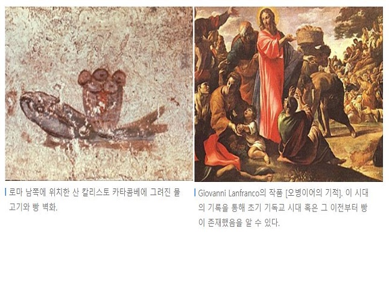

|  |
빵의 시작은 무려 6000년 전으로 거슬러 올라가야 할 만큼 오래되었다. 성경책에 ‘사람은 빵만으로 살 수 없다’라고 쓰인 구절을 통해 우리는 성서가 쓰이기 이전부터 빵이 존재했을 것이라고 추측할 수 있다. 초기 인류는 채취한 곡류들을 곱게 갈아서 미음으로 만들어 먹었다. 이후 죽은 납작한 무발효 빵이 되었고 이후 현재 우리가 알고 있는 빵의 모양으로 변화되었다. 결국 수렵 문화에서 농경 사회로 접어들면서부터 자연스레 빵이 만들어졌다고 생각할 수 있다. |